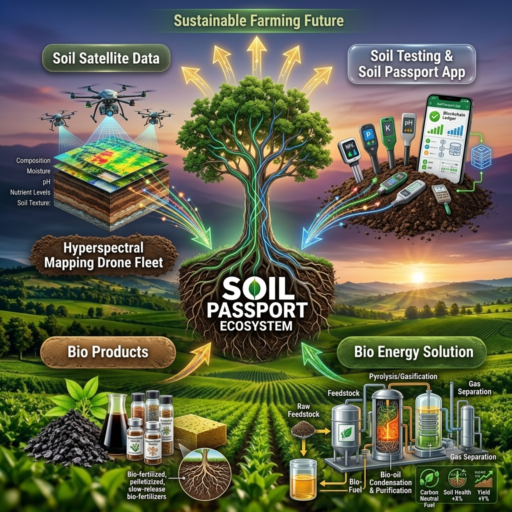

Climate Technology · Agri-Tech · Soil Intelligence · Bioenergy
AI & Satellite-Powered Intelligence for Soil, Carbon & Bioenergy
Soil Passport™ is a UK technology and IP company developing AI and satellite-powered soil intelligence, soil carbon intelligence and SPX™ climate technologies. Our technology connects soil, satellite data, biomass and renewable energy to enable SPX™ solutions across biochar, bio-oil, biohydrogen, bioenergy and carbon removal.

01 — The Big Idea
What if every acre had a digital identity?
Every field contains data. Every crop produces biomass. Every tonne of biomass has potential value. Every tonne of carbon removed or avoided needs measurement and verification. Soil Passport™ brings these worlds together.
- Soil
- Farm
- Biomass
- Bioenergy
- Carbon
- MRV
- Market
Our platform is being developed to create a digital intelligence layer across the whole chain, a new infrastructure for the emerging circular bioeconomy and climate economy.
The Ecosystem
Soil Passport™, SPX™, Partners and the Marketplace: one ecosystem
Why Soil Passport™
From soil intelligence to carbon intelligence, and from biomass to bioenergy
Soil Passport™
Your soil. Your data. Your climate asset. A digital profile for agricultural land: soil testing, AI predictions, satellite intelligence, and an evolving intelligence record for every field.
Learn more →SPX™
From biomass to climate infrastructure. The product and technology ecosystem under Soil Passport: BioChar™, BioOil™, BioTar™, BioH₂™, Power™ and Carbon™.
Learn more →Marketplace
The climate economy needs a marketplace. A digital marketplace connecting projects, technologies, environmental assets and buyers across carbon, technology and biomass.
Learn more →FAQ
Common questions about Soil Passport™ and SPX™
What is Soil Passport™?
An agricultural intelligence platform that creates a digital profile for agricultural land, combining soil testing, AI predictions, satellite intelligence, soil carbon intelligence and biomass intelligence into one evolving record.
What is SPX™?
The product and technology ecosystem operating under Soil Passport, covering biochar, bio-oil, bio-tar, biohydrogen, bioenergy power and carbon measurement/MRV across the climate value chain.
Who is NZLoop?
NZLoop Solutions Pvt Ltd is the India-based implementation and operating company using Soil Passport™ technology on the ground: agricultural waste assessment, biomass aggregation, farmer and FPO programmes, pyrolysis and carbon-removal projects.
How does the Soil Passport Marketplace work?
It connects projects, technologies, environmental assets and buyers across carbon, technology and biomass, while independent carbon standards, registries and verification bodies remain independent.
How does soil testing work with Soil Passport™?
A physical soil testing device measures NPK, pH, EC, moisture, temperature and salinity in the field. Readings sync to the Soil Passport™ app, combine with satellite and historical data, and build a digital soil profile over time.
What SPX™ products are available?
Six pathways: SPX BioChar™, SPX BioOil™, SPX BioTar™, SPX BioH₂™ (hydrogen), SPX Power™ (bioenergy) and SPX Carbon™ (MRV and carbon project infrastructure), each with its own product page and digital passport standard.
Can biochar from SPX BioChar™ generate carbon credits?
SPX BioChar™ provides the traceability and MRV data layer that supports carbon project development, but Soil Passport does not issue carbon credits itself. Credits are issued by independent carbon standards and registries using recognised methodologies.
How can my organisation become a partner?
Soil Passport partners with agricultural/FPO networks, plant and project developers, technology companies, enterprises and investors. Visit the Partners page and apply, or use the contact form below.
Where is Soil Passport based?
Soil Passport Ltd is a UK technology and IP company headquartered in London, with a Research & Development Center at the Cambridge Institute for Sustainability Leadership, and ground implementation delivered through NZLoop Solutions Pvt Ltd in India.
The future isn't just about measuring the problem. It's about building the solution.
Measure the soil. Understand the land. Value the biomass. Build the project. Measure the carbon. Connect the market. Welcome to Soil Passport™.
Get in touch
Tell us about your land, your project, or your technology. Whether you're a farmer, an FPO, a technology company or an investor, send us a message.